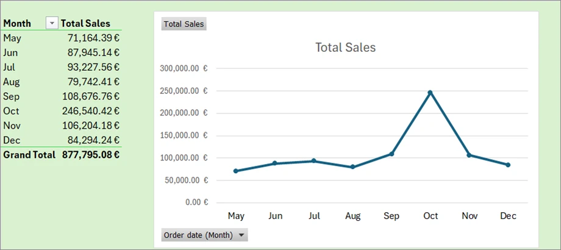
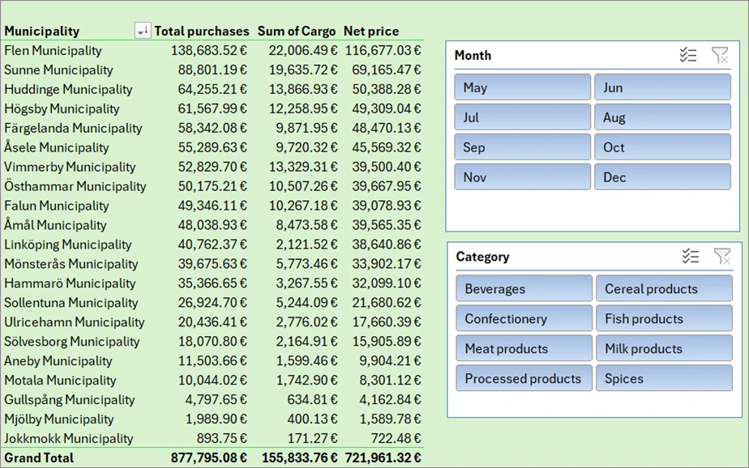
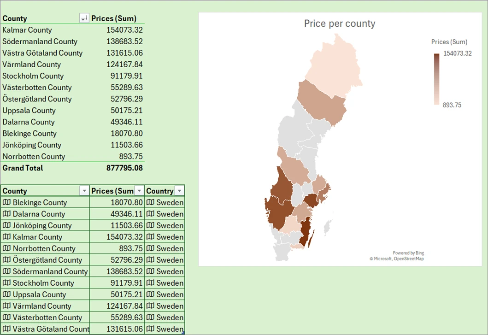
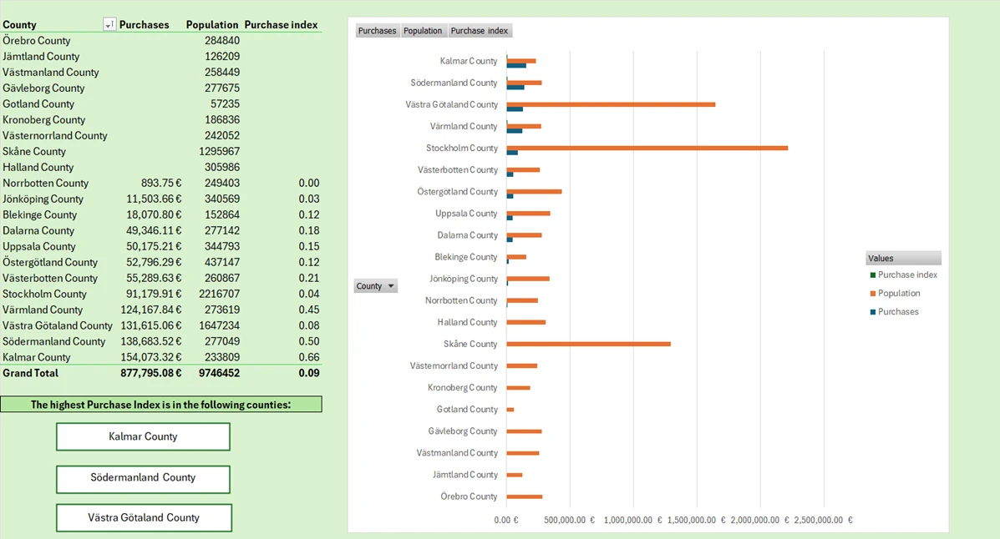
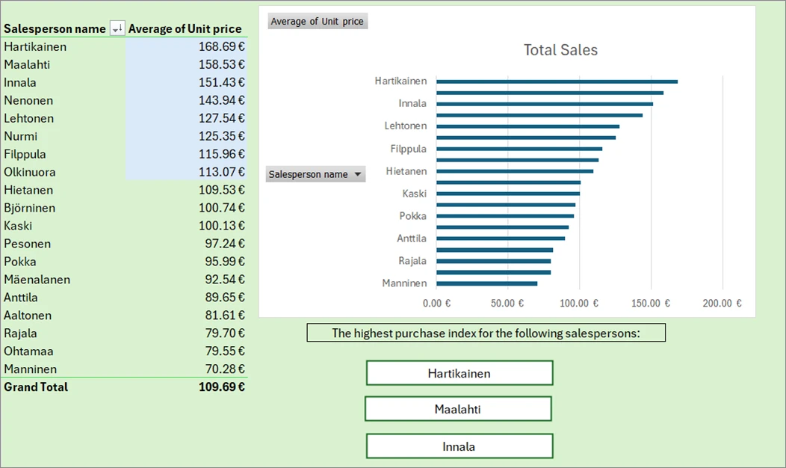
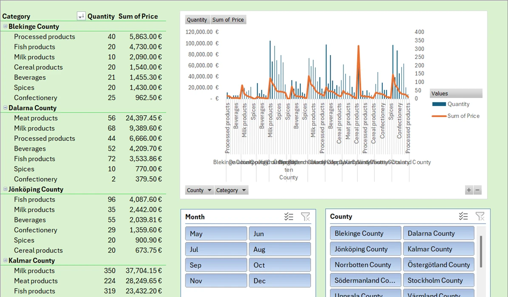

Sales Summary for the CEO
An Excel workbook that turns eight months of order data into a short, visual summary for management: where sales came from, who sold best and which product categories lag.
- Year and context
- 2026, course simulation task, Excel ja BI course, Haaga-Helia
- Tools
- Excel: Power Query, Data Model, PivotTables, slicers, map chart
- Data
- Fictional orders, May–Dec 2025: 20 municipalities, 11 counties, 22 salespeople
- Output
- 6 PivotTables, 5 charts, slicers and written key observations
The brief
In this course simulation, a fictional company sold food and drink products in Sweden between May and December 2025. The CEO wanted a brief, easy-to-read summary of the results: where the most sales happened, which salespeople performed best and which product categories could be improved.
The workbook had to include PivotTables and charts, a map, an Excel Data Model and a short written analysis. Source material: an orders workbook, a salespeople workbook and the list of Swedish municipalities.
How the workbook was built
Combine the sources
Orders, salespeople and municipalities brought together with Power Query and related in the Excel Data Model, so each order carries its county and salesperson.
Analyse with PivotTables
Six PivotTables: sales by month, purchases by municipality, a purchase index by county (purchases relative to population), price per county, average unit price per salesperson, and quantity and sales by category.
Visualise
A monthly sales line chart, bar charts, a combo chart, a filled map of Sweden by county, and slicers for month, category and county.
Write it up
A key-observations sheet that answers the CEO's questions in a few sentences.
The numbers at a glance
Redrawn from the workbook's PivotTables (fictional course data, euros). Hover or tap a bar for its value.
Show data
| Month | Sales (€) |
|---|
Show data
| Municipality | Purchases (€) |
|---|
The workbook
Each sheet exported as an image from the original workbook. Select any image to open it at full size.












Key observations
Quoted from the workbook's key-observations sheet.
- October had the highest sales (246,540.42€), while May had the lowest (71,164.39€).
- Norrbotten County shows the weakest performance. The region purchased exclusively spices and milk products and all of these transactions occurred solely in May.
- The largest sales volumes come from beverages, fish products, and milk products. However, when looking at profitability, the top‑earning categories shift to beverages, milk products, and meat.
- Flen Municipality is the largest contributor to total revenue, generating 138,683.52€, while Jokkmokk Municipality contributes the least, with only 893.75€ in sales. The difference is more than 155x.